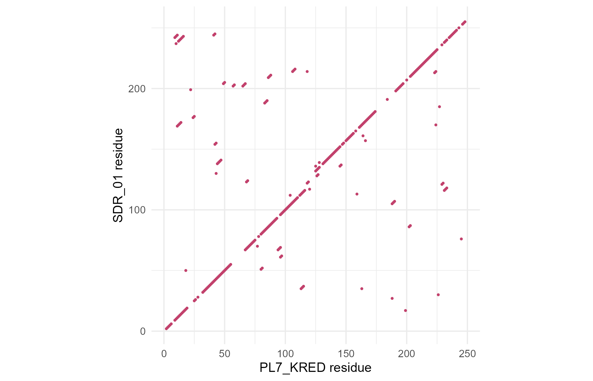

Module 10 · Lesson 4 of 13 Week 150 of 160 About 5–7 hours
Pairwise alignment I: global alignment
Lining up two sequences, the best way
How similar are two sequences, and which parts correspond? Draw dot plots, score an alignment, and then compute the best global alignment by dynamic programming: fill in the Needleman-Wunsch matrix by hand, trace back the alignment, check it against pwalign, and align PL-7’s ketoreductase with a relative. See why dynamic programming is necessary, by counting how many alignments there are.
Amaya’s group has found 24 enzymes in public databases that look like relatives of PL-7’s ketoreductase. Their first question is always the same: how similar is each one to ours, and which residues correspond? Sequences of related proteins differ by substitutions, and also by insertions and deletions (indels), so comparing them position by position doesn’t work: a single extra residue shifts everything after it. An alignment puts the two sequences in rows, with gaps where one has residues the other lacks, so that corresponding residues share a column.
Alignment is where bioinformatics meets algorithms. Today’s idea, dynamic programming, turns an impossible search into a table you can fill in by hand.
In this lesson you’ll:
- draw dot plots to see similarity between two sequences
- score an alignment with match, mismatch and gap scores
- compute the best global alignment with the Needleman-Wunsch algorithm, by hand
- trace back the alignment, and check it against
pwalign::pairwiseAlignment() - align two enzymes with a substitution matrix, and see how many alignments there are
Dot plots
A dot plot puts one sequence along each axis and marks a dot wherever the two have the same letter. Identical stretches show as diagonal lines; an insertion shifts the line sideways; a repeat shows as parallel lines. Noise is reduced with a window: put a dot only where, say, at least 3 of the 5 letters in a window match.
kred_family.fasta has the 25 family members; the first is PL7_KRED. The setup code reads them.
Your turn. Make a windowed dot plot of the first 80 residues of PL7_KRED and SDR_01: a dot where at least 3 of 5 residues match along the diagonal. Count the dots, and the dots on the main diagonal.
At least 3 matches in the window of 5.
a <- strsplit(as.character(subseq(fam[[1]], 1, 80)), "")[[1]]
b <- strsplit(as.character(subseq(fam[[2]], 1, 80)), "")[[1]]
match <- outer(a, b, "==") # 80 x 80 TRUE/FALSE
w <- 5
dots <- matrix(FALSE, 76, 76)
for (i in 1:76) for (j in 1:76) dots[i, j] <- sum(match[cbind(i:(i + 4), j:(j + 4))]) >= 3
c(dots = sum(dots), on_diagonal = sum(diag(dots)))53 dots, 52 of them on the main diagonal: over its first 80 residues, SDR_01 lines up with PL7_KRED without any shift, and there’s only one chance dot off the diagonal. The full plot below shows the diagonal running through the whole length, with small sideways steps where one of the sequences has an insertion.

Scoring an alignment
To choose between alignments, give each a score: add a reward for each column with two identical residues (a match), a penalty for each mismatch, and a penalty for each gap. With DNA, a common simple scheme is match +1, mismatch -1, gap -1 (this lesson’s) or -2. Higher is better, and the best alignment is the one with the highest score.
Your turn. Score this alignment of GATTACA and GCATGCT with match +1, mismatch -1 and gap -1:
G-ATTACA
GCAT-GCTA mismatch scores -1.
top <- strsplit("G-ATTACA", "")[[1]]
bot <- strsplit("GCAT-GCT", "")[[1]]
gap <- top == "-" | bot == "-"
sum(ifelse(gap, -1, ifelse(top == bot, 1, -1)))A score of 0. Column by column: G/G match, -/C gap, A/A match, T/T match, T/- gap, A/G mismatch, C/C match, A/T mismatch: 4 matches, 2 mismatches and 2 gaps, 4 - 2 - 2 = 0. Is that the best possible? Checking every alignment is hopeless, as the challenge shows; the next section finds the best one directly.
Needleman-Wunsch: dynamic programming
How do we find the best alignment? Saul Needleman and Christian Wunsch (1970) used dynamic programming. Let F(i, j) be the best score for aligning the first i letters of x with the first j letters of y. The last column of that best alignment is one of three things: x_i against y_j, x_i against a gap, or a gap against y_j. So
F(i, j) = \max\begin{cases} F(i-1, j-1) + s(x_i, y_j)\\ F(i-1, j) + g\\ F(i, j-1) + g \end{cases}
with s the match/mismatch score and g the gap score (negative), starting from F(0, 0) = 0, F(i, 0) = ig and F(0, j) = jg (aligning a prefix against nothing at all). Fill the table row by row; F(n, m) is the best score; tracing back the choices gives the alignment. The work is proportional to nm, not to the astronomical number of alignments.
Your turn. Set up the (n+1) \times (m+1) matrix for x = GATTACA and y = GCATGCT, and fill its first row and column.
The first row is j \times g too.
x <- strsplit("GATTACA", "")[[1]]; y <- strsplit("GCATGCT", "")[[1]]
g <- -1
F <- matrix(NA, length(x) + 1, length(y) + 1, dimnames = list(c("", x), c("", y)))
F[, 1] <- (0:length(x)) * g
F[1, ] <- (0:length(y)) * g
FAn 8 × 8 matrix whose first column runs 0, -1, …, -7 (aligning GATTACA’s first i letters against nothing costs i gaps) and first row likewise, with everything else still to fill.
Your turn. Fill in the rest with the recurrence, and read off the best score.
Every gap costs g.
x <- strsplit("GATTACA", "")[[1]]; y <- strsplit("GCATGCT", "")[[1]]
g <- -1; s <- function(a, b) ifelse(a == b, 1, -1)
F <- matrix(NA, length(x) + 1, length(y) + 1, dimnames = list(c("", x), c("", y)))
F[, 1] <- (0:length(x)) * g; F[1, ] <- (0:length(y)) * g
for (i in 2:(length(x) + 1)) for (j in 2:(length(y) + 1)) {
F[i, j] <- max(F[i - 1, j - 1] + s(x[i - 1], y[j - 1]), # diagonal: align x and y
F[i - 1, j] + g, # up: x against a gap
F[i, j - 1] + g) # left: y against a gap
}
print(F)
F[length(x) + 1, length(y) + 1]The bottom-right cell is 0: the best global alignment of GATTACA and GCATGCT scores 0, so the alignment you scored above is one of the best. Each cell was computed once from three neighbours: 49 cells, instead of examining millions of alignments.
Your turn. Trace back from the bottom-right cell: at each step, move to the neighbour that produced the cell’s value (preferring the diagonal), and build the alignment from the end.
A left move uses one letter of y: j - 1.
x <- strsplit("GATTACA", "")[[1]]; y <- strsplit("GCATGCT", "")[[1]]
g <- -1; s <- function(a, b) ifelse(a == b, 1, -1)
F <- matrix(NA, length(x) + 1, length(y) + 1)
F[, 1] <- (0:length(x)) * g; F[1, ] <- (0:length(y)) * g
for (i in 2:(length(x) + 1)) for (j in 2:(length(y) + 1))
F[i, j] <- max(F[i - 1, j - 1] + s(x[i - 1], y[j - 1]), F[i - 1, j] + g, F[i, j - 1] + g)
i <- length(x) + 1; j <- length(y) + 1; top <- bot <- character(0)
while (i > 1 || j > 1) {
if (i > 1 && j > 1 && F[i, j] == F[i - 1, j - 1] + s(x[i - 1], y[j - 1])) {
top <- c(x[i - 1], top); bot <- c(y[j - 1], bot); i <- i - 1; j <- j - 1
} else if (i > 1 && F[i, j] == F[i - 1, j] + g) {
top <- c(x[i - 1], top); bot <- c("-", bot); i <- i - 1
} else {
top <- c("-", top); bot <- c(y[j - 1], bot); j <- j - 1
}
}
c(paste(top, collapse = ""), paste(bot, collapse = ""))G-ATTACA over GCA-TGCT: a different alignment from the one you scored (G-ATTACA over GCAT-GCT), with the same score of 0. There are often several optimal alignments, and which one the traceback returns depends on how ties are broken (here, the diagonal first, then up).
With pwalign
Your turn. Do the same with pwalign::pairwiseAlignment(). Its gap penalty for a gap of length k is gapOpening + k \times gapExtension, so a linear gap of 1 per position is gapOpening = 0, gapExtension = 1.
One per gap position.
sm <- nucleotideSubstitutionMatrix(match = 1, mismatch = -1)
al <- pairwiseAlignment(DNAString("GATTACA"), DNAString("GCATGCT"), type = "global",
substitutionMatrix = sm, gapOpening = 0, gapExtension = 1)
print(al)
score(al)A score of 0, the same as yours, and pwalign’s alignment is G-ATTACA over GCATG-CT, a third optimal one. The score is what’s guaranteed; the alignment is one of the best.
Aligning two enzymes
For proteins, matches and mismatches aren’t all equal: replacing leucine with isoleucine (both hydrophobic, similar size) is common in evolution and rarely harmful, while replacing it with aspartate is rare. A substitution matrix gives each pair of amino acids a score from how often they replace each other in real alignments; Lesson 5 explains where BLOSUM62, the standard one, comes from. Gaps are scored affinely: a larger penalty to open a gap, a smaller one to extend it, because a single indel event often inserts or deletes several residues at once.
Your turn. Align PL7_KRED globally with SDR_01, using BLOSUM62, a gap-opening penalty of 10 and an extension penalty of 1, and compute the percentage identity with pid().
The matrix is "BLOSUM62".
al <- pairwiseAlignment(fam[[1]], fam[[2]], type = "global", substitutionMatrix = "BLOSUM62",
gapOpening = 10, gapExtension = 1)
c(score = score(al), identity = pid(al), gaps = nindel(al)@insertion[1] + nindel(al)@deletion[1])A score of 757, 60.6% identity and 2 gap events: SDR_01 is a close relative. pid() counts identical columns as a percentage of the aligned columns, including gaps inside the alignment (there are several conventions; pid(al, "PID2") and others give the alternatives). Lesson 6 puts scores like 757 on a probability scale.
Your turn. The gap penalties change the alignment. Align PL7_KRED with SDR_01 with gap-opening penalties of 2, 10 and 25, and count the gap events.
The third opening penalty is 25.
sapply(c(open2 = 2, open10 = 10, open25 = 25), function(o) {
al <- pairwiseAlignment(fam[[1]], fam[[2]], type = "global", substitutionMatrix = "BLOSUM62", gapOpening = o, gapExtension = 1)
c(gap_events = nindel(al)@insertion[1] + nindel(al)@deletion[1], identity = pid(al))
})With a cheap gap opening (2), the alignment uses 7 gap events to squeeze in a few more identities (61.3%); with 10, 2 gap events (60.6%); with 25, a single one (59.8%). Cheap gaps over-fit, opening gaps to line up residues that match by chance; expensive gaps miss real indels. For proteins with BLOSUM62, gap-opening penalties of 10 to 11 and extensions of 1 are the usual compromise.
NoteGo deeper: affine gaps in three matrices, and linear space
With affine gaps, the recurrence needs three matrices (Gotoh, 1982): M(i, j) for alignments ending in a match column, I_x(i, j) for those ending with a gap in y, and I_y(i, j) for those ending with a gap in x. A gap is opened from M (paying open plus extend) and extended within I_x or I_y (paying extend only). The work is still O(nm). Memory is O(nm) too, which is a problem for long sequences (two bacterial genomes would need 10^{13} cells), but Hirschberg’s algorithm (1975) finds the same alignment in linear memory by divide and conquer, computing the middle row’s scores from both ends. Richard Durbin, Sean Eddy, Anders Krogh and Graeme Mitchison, Biological Sequence Analysis (Cambridge, 1998), chapter 2, is the classic account.
Challenge round
Challenge 1 · How many alignments? The number of global alignments of two sequences of lengths n and m satisfies N(i, j) = N(i-1, j-1) + N(i-1, j) + N(i, j-1), with N(i, 0) = N(0, j) = 1 (the Delannoy numbers). Compute it for two sequences of 10 and of 250 letters.
The third term is the left neighbour: j - 1.
count_alignments <- function(n) {
N <- matrix(1, n + 1, n + 1)
for (i in 2:(n + 1)) for (j in 2:(n + 1)) N[i, j] <- N[i - 1, j - 1] + N[i - 1, j] + N[i, j - 1]
N[n + 1, n + 1]
}
c(n10 = count_alignments(10), log10_n250 = log10(count_alignments(250)))8,097,453 alignments for two sequences of 10 letters, and about 10^{190} for two of 250, far more than the roughly 10^{80} atoms in the observable universe. The Needleman-Wunsch table for 250 × 250 has 62,500 cells.
Challenge 2 · End gaps. A global alignment penalizes gaps at the ends, which is wrong when one sequence is a fragment of the other (a read and a gene). Align the first 100 residues of SDR_01 to the whole of PL7_KRED globally and with type = "global-local" (the second sequence’s ends are free), and compare the scores.
The type is "global-local".
piece <- subseq(fam[[2]], 1, 100)
sapply(c("global", "global-local"), function(ty)
score(pairwiseAlignment(piece, fam[[1]], type = ty, substitutionMatrix = "BLOSUM62", gapOpening = 10, gapExtension = 1)))131 globally against 293 with free end gaps. The global alignment has to pay for PL7_KRED’s other 150 residues as gaps; the global-local alignment fits the 100 residues where they belong, and leaves the rest unaligned at no cost.
Quick quiz
1. In a dot plot of two related sequences, an insertion in one appears as:
Parallel lines indicate repeats.
2. F(i, j) in the Needleman-Wunsch matrix is:
That’s the subproblem that dynamic programming solves.
3. Why is dynamic programming necessary?
Two sequences of 250 letters have over 10^{190} alignments.
4. What does the traceback do?
Ties give several optimal alignments.
5. With affine gap penalties, a gap of length 5 costs:
In pwalign’s convention: gapOpening + k * gapExtension.
6. When should end gaps be free?
Semi-global (“global-local”, “overlap”) alignment.
Wrap-up
You’ve aligned sequences optimally. Here’s what you’ve learned:
- Dot plots show similarity as diagonals, shifted by indels.
- An alignment’s score adds match rewards and mismatch and gap penalties.
- Needleman-Wunsch finds the best global alignment by dynamic programming in O(nm); the traceback recovers it. GATTACA and GCATGCT’s best score is 0.
- pwalign does the same, with substitution matrices and affine gaps; PL7_KRED and SDR_01 are 61% identical.
- The number of alignments is astronomical (8 million for two sequences of 10), which is why the algorithm matters.
TipPractice in RStudio (optional, about an hour)
Download kred_family.fasta into your project’s data-raw/ folder, and install pwalign with BiocManager::install("pwalign").
- All against all. Align PL7_KRED with all 24 relatives and plot the percentage identity against the alignment score. Is the relation straight?
- Gotoh by hand. Extend your Needleman-Wunsch code to affine gaps with three matrices, and check it against pwalign on two short proteins.
- A dot plot function. Write a function that draws a windowed dot plot with ggplot2 for any two sequences, window and threshold. Try a sequence against itself, and against its reverse.
- Timing. Time your R implementation against pwalign for sequences of 100, 200 and 400 letters. How do both scale?
NoteKey words from this lesson
- Alignment
- An arrangement of two (or more) sequences in rows, with gaps, so that corresponding letters share columns.
- Dot plot
- A plot with one sequence on each axis and a dot wherever they match (in a window).
- Indel
- An insertion or a deletion, shown as a gap in an alignment.
- Global alignment
- An alignment of the whole of both sequences, end to end.
- Dynamic programming
- Solving a problem by combining the solutions of overlapping subproblems, stored in a table.
- Needleman-Wunsch algorithm
- The dynamic programming algorithm for optimal global alignment.
- Traceback
- Following the choices back through the matrix to recover the optimal alignment.
- Substitution matrix
- Scores for aligning each pair of letters, such as BLOSUM62 for amino acids.
- Affine gap penalty
- A gap cost of an opening penalty plus an extension penalty per position.
NoteWant to read more?
- Richard Durbin, Sean Eddy, Anders Krogh and Graeme Mitchison, Biological Sequence Analysis (Cambridge, 1998), chapter 2, on pairwise alignment. The standard text for Lessons 4 to 7 and 10.
- Saul Needleman and Christian Wunsch, “A general method applicable to the search for similarities in the amino acid sequence of two proteins”, Journal of Molecular Biology 48, 1970, pages 443 to 453.
- Phillip Compeau and Pavel Pevzner, Bioinformatics Algorithms (3rd edition, 2018), chapter 5, “How Do We Compare Biological Sequences?”, which builds dynamic programming from the “Manhattan tourist” problem.